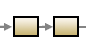

Table 1 lists the endpoint patterns available from the route editor's palette.
Table 1. Endpoints
| Icon | Name | Use |
|---|---|---|
| Endpoint | Acts as either a message source or message sink | |

| Bean | Binds beans to Camel message exchanges |
| Log | Creates log messages using the Simple language | |
|
| Process | Process the message using a custom processor |
Table 2 describe the routing patterns available from the route editor palette.
Table 2. Message Routing
| Icon | Name | Use |
|---|---|---|

| Aggregate | Aggregates many messages into a single message |

| Choice | Routes messages based on a series of predicates. (This is one of three components that make up a content-based router.) |

| Dynamic Router | Routes messages based on rules specified by the recipients at start up |

| Filter | Filters messages before passing them to a resource |

| Idempotent Consumer | Filters out duplicate messages |
| Load Balance | Balances message processing among a number of nodes | |

| Multicast | Routes a message to a number of endpoints |

| Otherwise | Route to be executed when all other choices evaluate to false. (This is one of three components that make up a content-based router.) |
|  | Pipeline | Executes a sequence of processors in order |

| Recipient List | Routes messages to a number of dynamically specified recipients |

| Resequence | Resequences messages based on an expression |

| Routing Slip | Routes a message through a series of steps that are determined at runtime |
|
| Sort | Sorts the contents of the message |
| Split | Splits a message into pieces that can processed separately | |
|
| When | Triggers a route when an expression evaluates to true. (This is one of three components that make up a content-based router.) |

| Wire Tap | Routes a copy of a message to a secondary destination while passing the original message to the actual recipient |
Table 3 describes the control flow patterns available from the route editor palette.
Table 3. Control flow
| Icon | Name | Use |
|---|---|---|
|
| Catch | Catches exceptions as part of a try,
catch, finally
block |
|
| Delay | Delays processing for a set length of time |
|
| Finally | Node traversed when a try,
catch, finally
block exits |
|
| Intercept | Intercepts messages at each step in the message flow |
|
| Intercept From | Intercepts incoming messages |
|
| Intercept Send to Endpoint | Intercepts messages sent to a specified endpoint |
|
| Loop | Processes a message multiple times |
|
| On Completion | Route to be executed when normal route processing completes |
|
| On Exception | Route to be executed when an exception is thrown |
|
| Rollback | Forces a rollback of a transacted route by throwing
RollbackExchangeException |
|
| Throttle | Controls the number of messages passed to the next node in a given time period |
|
| Throw Exception | Throws an exception |
|
| Transacted | Marks route as a transaction |
|
| Try | Marks the beginning of a try,
catch, finally
block |
Table 4 describes the transformation patterns available from the route editor palette.
Table 4. Transformation
| Icon | Name | Use Case |
|---|---|---|
| Convert Body | Converts the message body to a form usable by the next endpoint | |

| Enrich | Enriches a message with data retrieved by a producer from a secondary resource |
| InOnly | One way exchange pattern where no response is produced (Event Message pattern) | |
| InOut | Exchange pattern where a response is produced | |

| Marshal | Marshals data into a format for transmission over a transport or component |
|
| Poll Enrich | Enriches messages with data retrieved from a polling consumer |
| Remove Header | Removes a named header from the message | |
| Remove Headers | Removes message headers whose name matches a specified pattern | |
| Remove Property | Removes a named property from the message exchange | |
| Set Body | Sets the contents of the message body | |

| Set Exchange Pattern | Sets the exchange pattern for the route |
|
| Set Fault Body | Sets the contents of a fault message body |
|
| Set Header | Sets the value of a message header |
|
| Set Out Header | Sets the value of a header on the outbound message |
|
| Set Property | Sets a named property on the message exchange |
| Transform | Transforms the message based on an expression | |

| Unmarshal | Converts the message data from the wire into a bean that Apache Camel processors can consume |
Table 5 describes the patterns on the Miscellaneous section of the palette.
Table 5. Miscellaneous
| Icon | Name | Use |
|---|---|---|
|
| AOP | Does processing before and after the route is completed. (This pattern is deprecated in Apache Camel.) |
|
| Policy | Defines a policy the route will use |
|
| Sampling | Extract a sample of the exchanges passing through a route |
|
| Stop | Stops processing of the current message |
|
| Threads | Specifies that all steps after this node are processed asynchronously |
|
| Validate | Validates a message based on an expression |